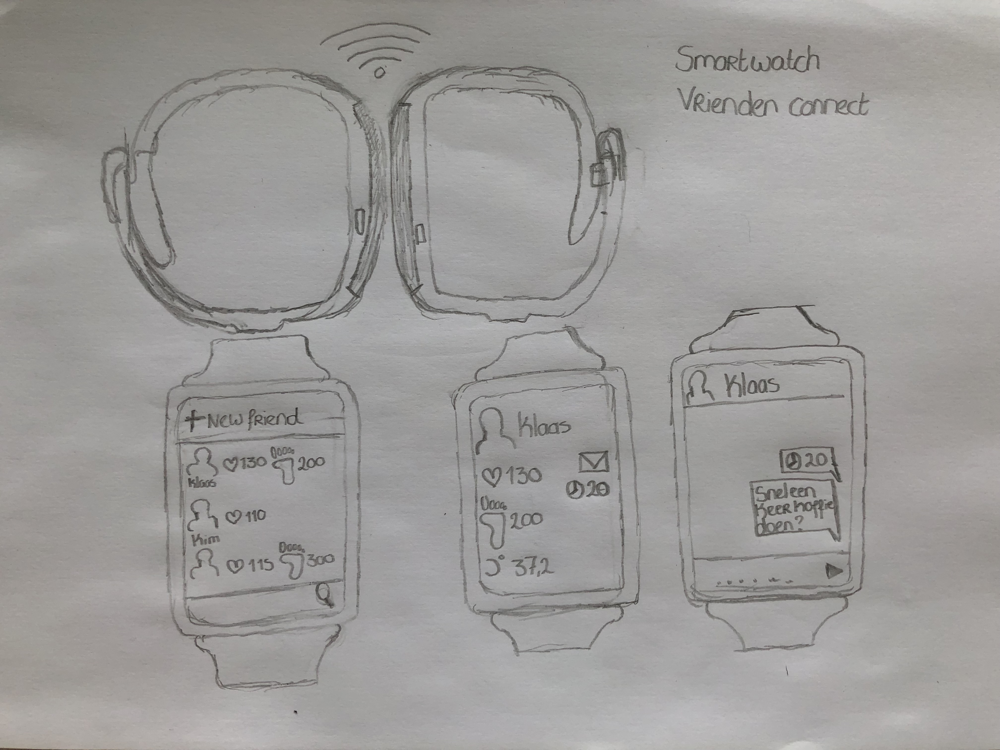
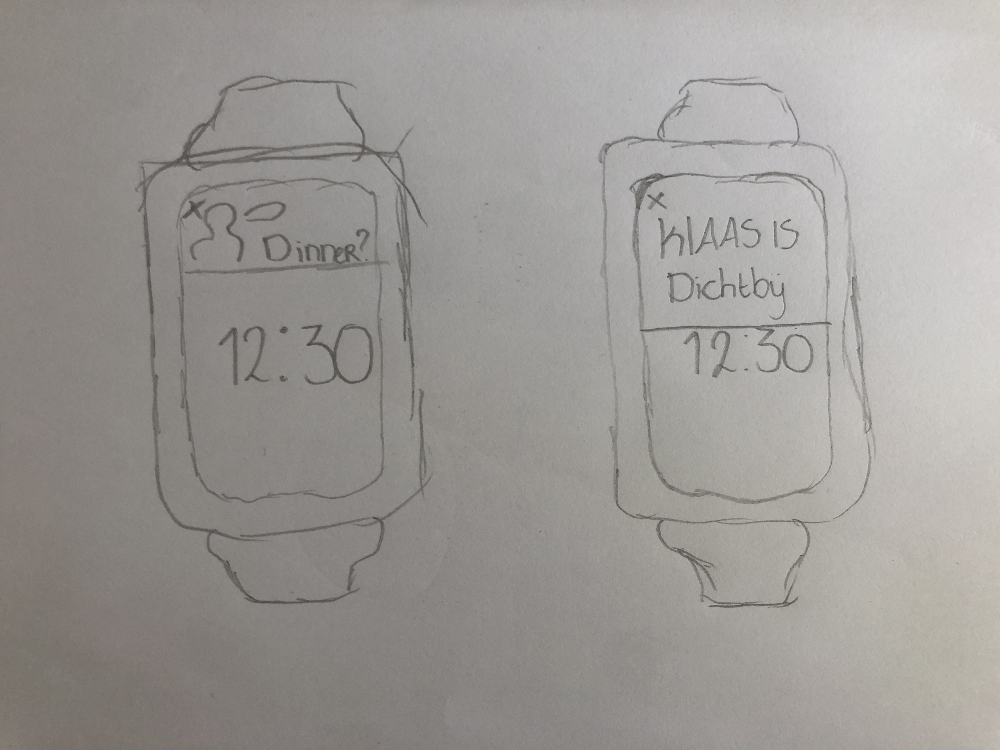

WEARABLES
Voor het vak HCI hadden wij een hoorcollege over wearables. Een wearable is iets wat je draagt en waar een computer een rol in speelt. Wij hebben de opdracht gekregen om een concept te ontwikkelen voor een wearable om in contact te komen met bijvoorbeeld je vrienden en familie.
Concept
Mijn concept bestaat uit een functie op een smartwatch. Eerst wilde ik een apart horloge ervan maken, maar ik dacht dat het erg onhandig zou zijn aangezien mensen dan soms twee horloges moeten dragen. Het concept bestaat uit een functie waarop je kan zien hoe het met je vrienden gaat kwa hartslag, zuurstof en hoeveel stappen die persoon heeft gezet. Je kan met een vriend connecten door elkaars horloges tegen elkaar aan te houden. Je vriend komt dat in je vriendenlijst te staan en je kunt live zien hoe het met die vriend gaat. Je hebt een eigen profiel in deze functie en ja kan ook instellen wie wel en wie niet en wat iemand mag zien. Als je op het profiel klikt van je vriend kan je ook zien wat de laatste keer is dat jullie elkaar hebben gezien. Ook kun je in deze functie een berichtje sturen met bijvoorbeeld het aantal paar dagen dat jullie elkaar niet hebben gezien en dan kan je bijvoorbeeld sturen: “ *30 dagen* lang niet gezien snel weer een koffietje doen?” Het maakt vooral gebruik van de sensoren fysiologic ,accelerometer, ultrasonic en capacitive. Het is trouwens ook mogelijk om te zien of die persoon dichtbij is (bijvoorbeeld je beste vriend), maar dit kun je instellen of je dit wel of niet wil. Ook kan het bijvoorbeeld handig zijn als een geliefde dus ziek is en dat je op deze manier kan kijken hoe het met de persoon gaat. Hieronder zijn een paar schetsen die ik heb gemaakt om het conept wat te verduidelijken.
 